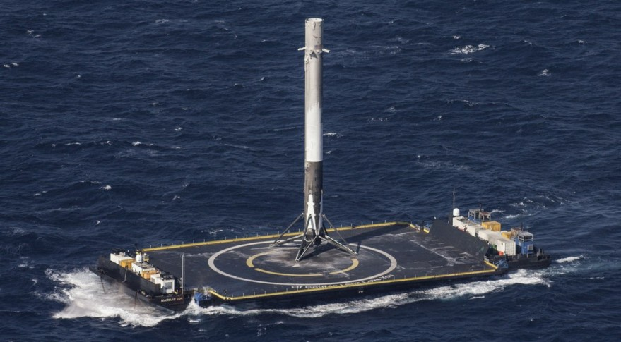

SpaceX has gained worldwide attention for a series of historic milestones. It is the only private company ever to return a spacecraft from low-Earth orbit, which it first accomplished in December 2010. The company made history again in May 2012 when its Dragon spacecraft delivered cargo to and from the Intenational Space Station — a challenging feat previously accomplished only by governments. Since then Dragon has delivered cargo to and from the space station multiple times, providing regular cargo resupply missions for NASA. In 2017, SpaceX successfully achieved the first reflight of an orbital class rocket – a historic milestone on the road to full and rapid rocket reusability.

SpaceX was founded in 2002 by entrepreneur Elon Musk with the goal of reducing space transportation costs and enabling the colonization of Mars.
See our Mars 2030 page for more information.

Elon Reeve Musk (born June 28, 1971) is a South African-born American entrepreneur and businessman who founded X.com in 1999 (which later became PayPal), SpaceX in 2002 and Tesla Motors in 2003. Musk became a multimillionaire in his late 20s when he sold his start-up company, Zip2, to a division of Compaq Computers. Musk made headlines in May 2012, when SpaceX launched a rocket that would send the first commercial vehicle to the International Space Station. He bolstered his portfolio with the purchase of SolarCity in 2016, and cemented his standing as a leader of industry by taking on an advisory role in the early days of President Donald Trump's administration.
Falcon 9 is a two-stage rocket designed and manufactured by SpaceX for the reliable and safe transport of satellites and the Dragon spacecraft into orbit. Falcon 9 is the first orbital class rocket capable of reflight. SpaceX believes rocket reusability is the key breakthrough needed to reduce the cost of access to space and enable people to live on other planets.

The Merlin engine that powers the first stage of Falcon 9 is developed and manufactured in-house by SpaceX. Burning liquid oxygen and rocket-grade kerosene propellant, a single Merlin engine emits 845 kilonewtons (190,000 pounds) of thrust at liftoff, rising to 914 kilonewtons (205,500 pounds) as it climbs out of Earth’s atmosphere. Merlin’s thrust-to-weight ratio exceeds 150, making the Merlin the most efficient booster engine ever built, while still maintaining the structural and thermal safety margins needed to carry astronauts.